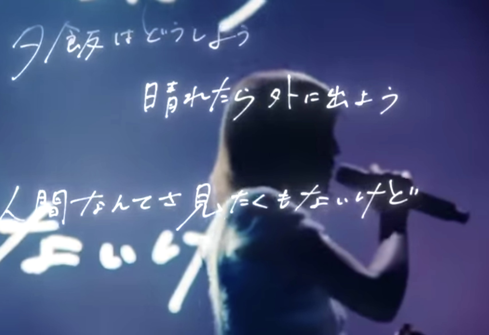

Member

n-buna [ナブナ]

- Guitar / Composer：ヨルシカの全ての楽曲の作詞作曲、編曲をしている。ライブではギターを担当
- 元ボカロP：代表作「夜明けと蛍」「ウミユリ海底譚」
- 「春泥棒」などの複数の楽曲でコーラスとして参加。「451」ではボーカルを担当し、自らの楽曲とファンについて自身の声で歌ったことでファンに衝撃を与えた。
- YouTubuのサブチャンネルにて弾き語り配信を不定期的に行っている。
- n-bunaYouTubu
suis [スイ]
- Vocal
- ソロ名義は「suis from ヨルシカ」。Eve「平行線」、Lanndo(ぬゆり)「宇宙の季節」などヨルシカ以外での活動も行っている。
- サポートメンバー平畑徹也のアルバム「AMNJK」にて、自身初の作詞を担当した「先日はロマンス」が収録。歌唱にも参加している。
- 京セラのオリジナルアニメ「今は将来に入りますか。」に登場する「AIちゃん」のCVを担当。主題歌の「星めぐる詩」のボーカルも担当。
サポートメンバー
下鶴光康
キタニタツヤ
Masack
- Drums
- URL
平畑徹也
- Piano
- URL